Seis estudios en un solo archivo
Domingo reúne lo que suele estar regado en cuadernos, carpetas y programas distintos. Lo sencillo aparece primero; lo avanzado, cuando lo necesitas.
Un editor tranquilo, y tu obra a la vista
Escribe con formato o en Markdown. Ordena capítulos y escenas como fichas, en esquema o en tablero, y abre dos textos lado a lado cuando necesitas comparar.
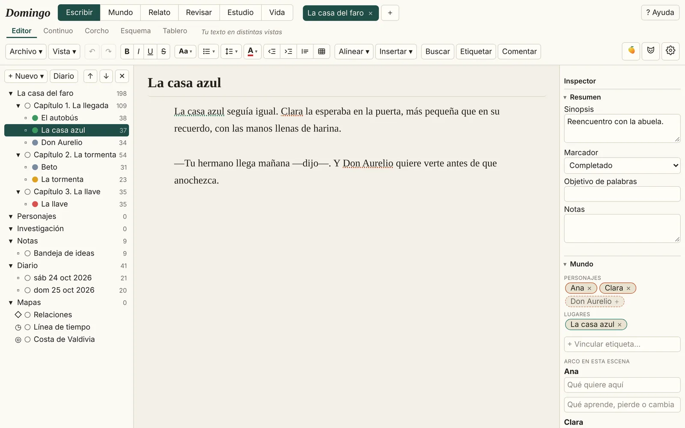
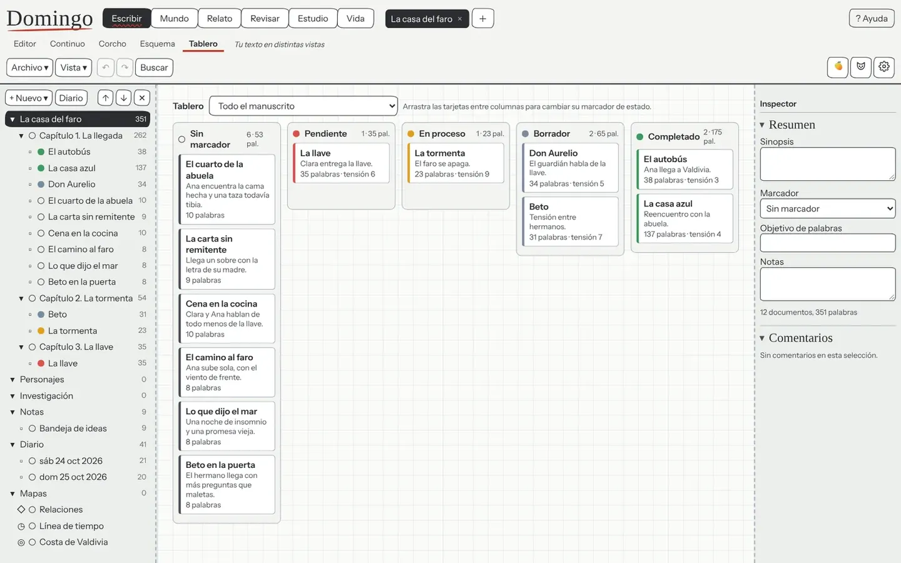
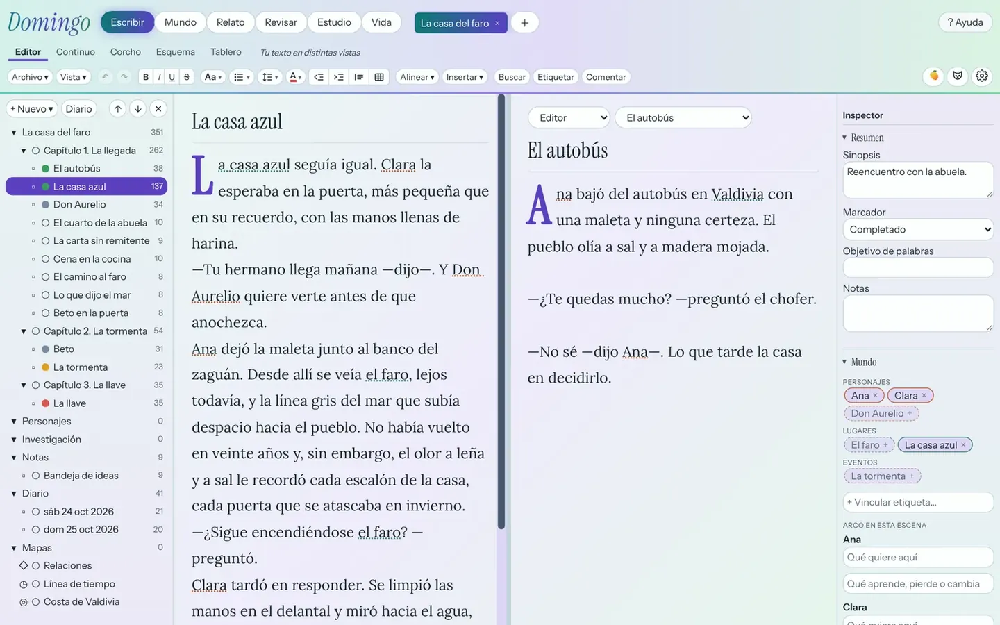
Quién es quién, dónde y cuándo
Personajes, lugares y objetos con fichas propias. Conéctalos en un mapa, ordénalos en el tiempo, dibuja el territorio y arma el árbol familiar.

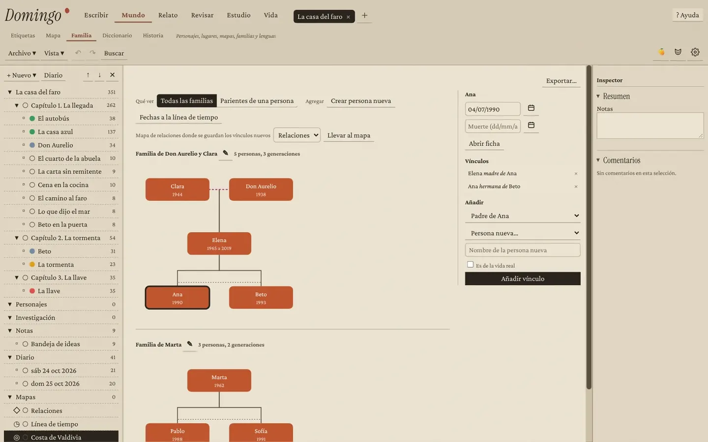

La forma de la historia
Mide la tensión de cada escena, sigue la presencia de tus personajes y lleva el registro de la historia en una tabla que se llena sola.


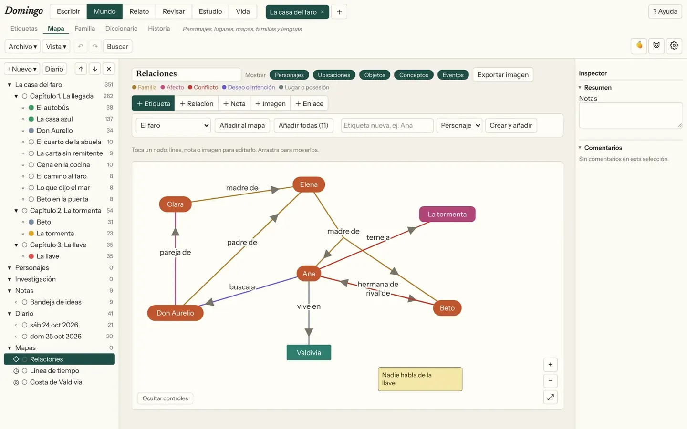
Revisa con criterio
Corrección en español, estilo, repeticiones, ritmo y legibilidad. Ve dónde pesa tu texto antes de entregarlo y guarda versiones para comparar.

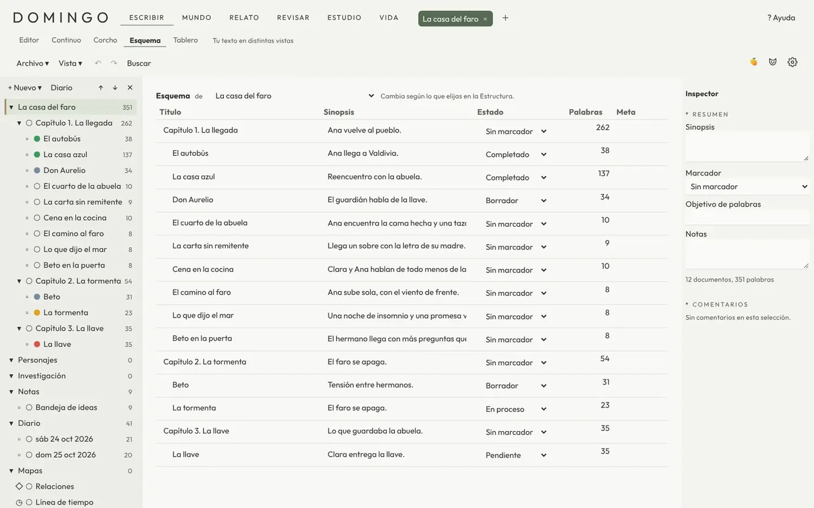

Para tu tesis o tu ensayo
Lee y subraya PDF dentro de la app, guarda tus fuentes y cita en APA, MLA o Chicago. La bibliografía y las notas numeradas se arman solas.

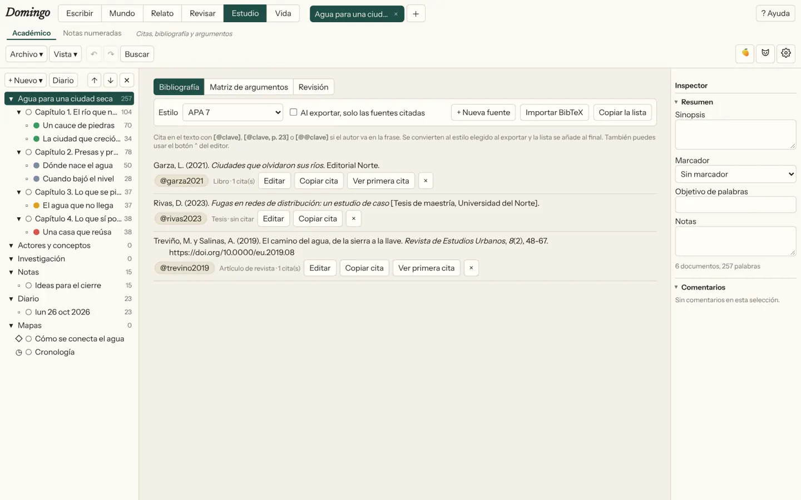
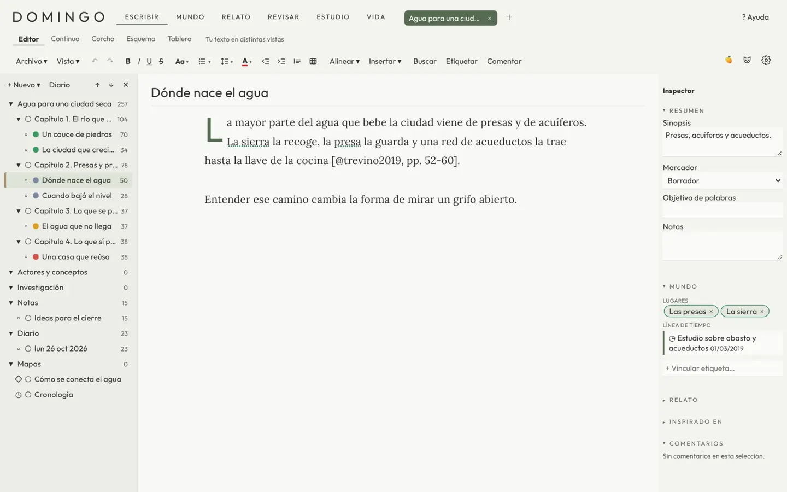
Lo vivido también se escribe
Un diario con fecha, ánimo y plantillas de reflexión. Una línea de vida, planes, hábitos e inspiración. Y lo que vives puede volverse historia.
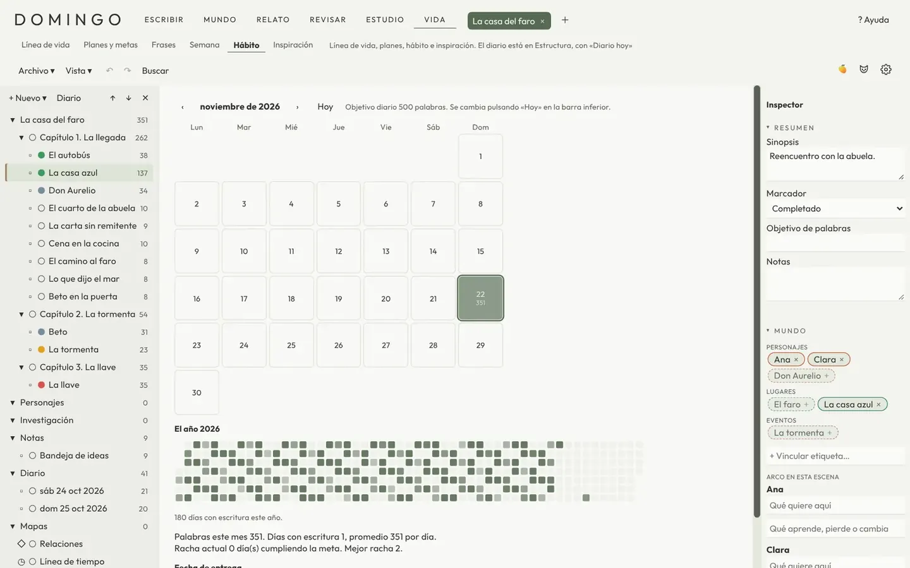
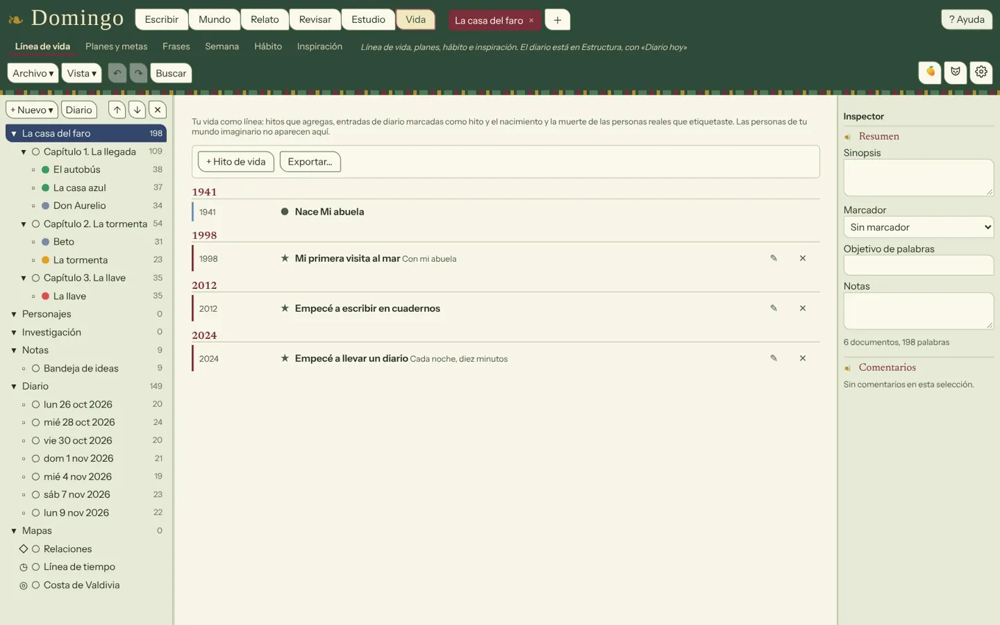
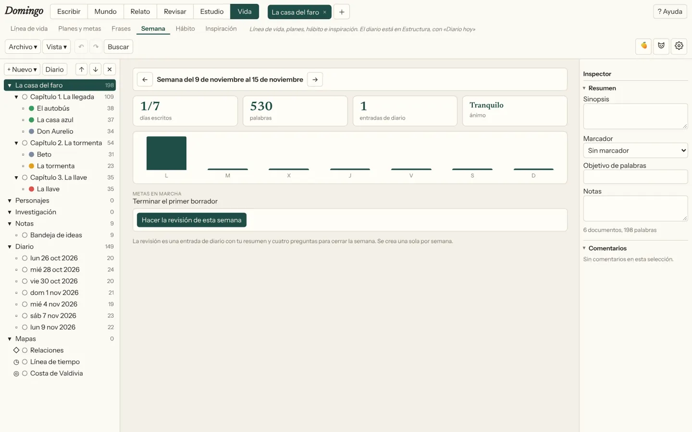
Aprende haciendo
Domingo trae obras de muestra con todo ya usado, como Don Quijote y La vida es sueño, y talleres guiados paso a paso. Pruébalas sin riesgo para tus manuscritos.